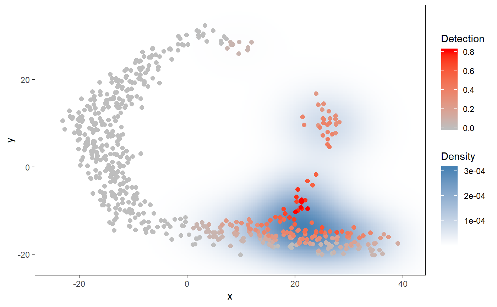

Visualizing the detection/expression of a set of genes in a 2D plot
plot_gene_set_haystack.RdVisualizing the detection/expression of a set of genes in a 2D plot
plot_gene_set_haystack(x, y, genes = NA, detection, high.resolution = TRUE, point.size = 1, order.by.signal = FALSE)
Arguments
| x | x-axis coordinates of cells in a 2D representation (e.g. resulting from PCA or t-SNE) |
|---|---|
| y | y-axis coordinates of cells in a 2D representation |
| genes | Gene names that are present in the input expression data, or a numerical indeces. If NA, all genes will be used. |
| detection | a logical matrix showing detection of genes (rows) in cells (columns) |
| high.resolution | logical (default: TRUE). If set to FALSE, the density plot will be of a lower resolution |
| point.size | numerical value to set size of points in plot. Default is 1. |
| order.by.signal | If TRUE, cells with higher signal will be put on the foreground in the plot. Default is FALSE. |
Value
A plot
Examples
# using the toy example of the singleCellHaystack package # define a logical matrix with detection of each gene (rows) in each cell (columns) dat.detection <- dat.expression > 1 # running haystack in default mode res <- haystack(x=dat.tsne$tSNE1, y=dat.tsne$tSNE2, detection=dat.detection)#>#>#>#>#>#>#>#>#>#># get biased genes, store in variable gene.subset sorted.table <- show_result_haystack(res.haystack = res, p.value.threshold = 1e-5) gene.subset <- row.names(sorted.table) # hierarchical clustering, and cutting into 5 clusters hc <- hclust_haystack(x=dat.tsne$tSNE1, y=dat.tsne$tSNE2, detection=dat.detection, genes=gene.subset) hc.clusters <- cutree(hc,k = 5) # visualization of average pattern of cluster 1 plot_gene_set_haystack(x=dat.tsne$tSNE1, y=dat.tsne$tSNE2, detection=dat.detection, genes=names(hc.clusters[hc.clusters==1]))# tweak size of points in plot sing 'point.size' plot_gene_set_haystack(x=dat.tsne$tSNE1, y=dat.tsne$tSNE2, detection=dat.detection, genes=names(hc.clusters[hc.clusters==1]), point.size=.1)# sort cells in the plot so cells with high average signal come on top plot_gene_set_haystack(x=dat.tsne$tSNE1, y=dat.tsne$tSNE2, detection=dat.detection, genes=names(hc.clusters[hc.clusters==1]), point.size=2, order.by.signal=TRUE)